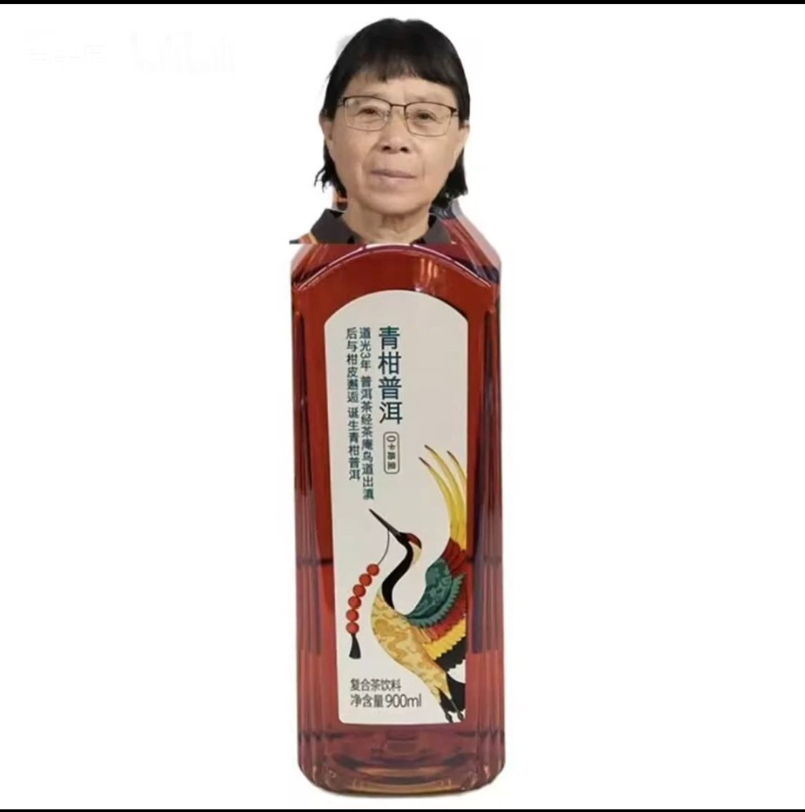

大狐帝国史官邹智萱（笔名段歌文）
@Rococo90933671
@Meguminsama2009 我当年发了个类似的，还有人破防拉黑了：

大狐帝国史官邹智萱（笔名段歌文）
@Rococo90933671
没想到有一天这位也会翻车，所以真的，不要造神，不要造神，不要造神 https://t.co/zxTVFjxdmA
Megumin_SAMA
@Meguminsama2009
我可能是第一个做出这个图的人 https://t.co/2PyFsKcUeP